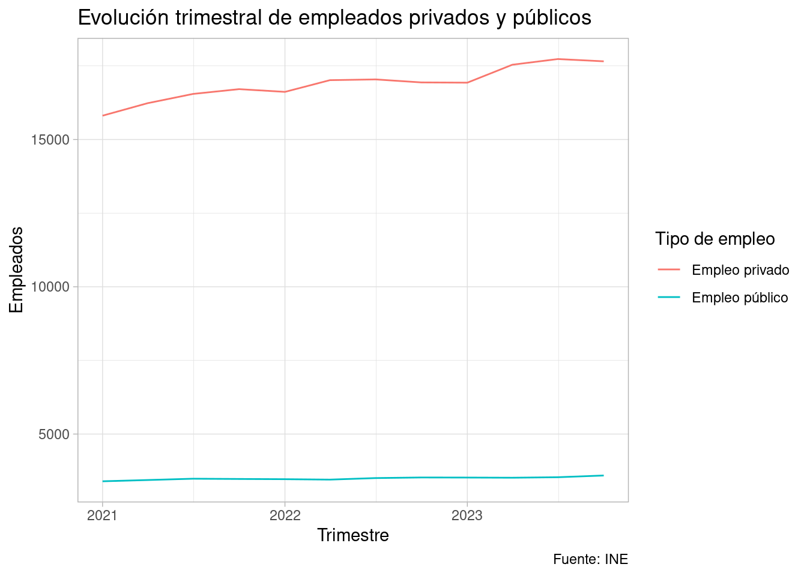

library(dplyr)
library(readr)
library(stringr)
library(ggplot2)
theme_set(theme_light())Tengo datos de empleos en el sector público y privado del INE. Y los quiero explorar con dplyr y ggplot2.
Leer los ficheros del INE siempre es aventura con sus formatos, pero aquí tienes el código.
df_empleo <- readr::read_csv2("../../data/4262.csv",
show_col_types = FALSE,
locale = locale(encoding = "latin1"))
df_empleo <- janitor::clean_names(df_empleo) |>
rename(ccaa = comunidades_y_ciudades_autonomas)
head(df_empleo)# A tibble: 6 × 5
ccaa sexo tipo_de_sector periodo total
<chr> <chr> <chr> <chr> <dbl>
1 01 Andalucía Hombres Empleo público 2023T4 286.
2 01 Andalucía Hombres Empleo público 2023T3 298.
3 01 Andalucía Hombres Empleo público 2023T2 289
4 01 Andalucía Hombres Empleo público 2023T1 294.
5 01 Andalucía Hombres Empleo público 2022T4 297
6 01 Andalucía Hombres Empleo público 2022T3 299 Una exploración rápida
Esto es lo que te planteo explorar: una agregación trimestral por tipo de sector.
df_agg <- df_empleo |>
group_by(periodo, tipo_de_sector) |>
summarise(total = sum(total), .groups = "drop") |>
convierte_periodo() # función propia para convertir a fecha
df_agg# A tibble: 24 × 3
periodo tipo_de_sector total
<date> <chr> <dbl>
1 2021-01-01 Empleo privado 15809.
2 2021-01-01 Empleo público 3397.
3 2021-04-01 Empleo privado 16232.
4 2021-04-01 Empleo público 3440.
5 2021-07-01 Empleo privado 16547.
6 2021-07-01 Empleo público 3484.
7 2021-10-01 Empleo privado 16709.
8 2021-10-01 Empleo público 3476.
9 2022-01-01 Empleo privado 16617.
10 2022-01-01 Empleo público 3468.
# ℹ 14 more rowsQue devuelve un gráfico así.
ggplot(df_agg) +
geom_line(aes(x = periodo, y = total, col = tipo_de_sector)) +
scale_color_discrete("Tipo de empleo") +
labs(
x = "Trimestre", y = "Empleados",
title = "Evolución trimestral de empleados privados y públicos",
caption = "Fuente: INE"
)
Más libertad
Ahora voy a preparar una función para que un usuario pueda elegir una columna más con la que agregar.
Lo que quiero es una función con la que funcione un código así:
agrega_empleo(sexo)Si intentas plantear eso solo con dplyr te dará un error diciendo que cierto objeto no es nada. En el código siguiente, grouping_var no sería nada sino fuera por esa combinación de enquo() con otros elementos.
library(rlang)
agrega_empleo <- function(grouping_var) {
nombre_metrica <- as_name(enquo(grouping_var))
nombre_metrica <- paste0("total_por_", nombre_metrica)
df_empleo |>
group_by(periodo, tipo_de_sector, !!enquo(grouping_var)) |>
summarise(!!nombre_metrica := sum(total), .groups = "drop") |>
convierte_periodo()
}agrega_empleo(ccaa)# A tibble: 456 × 4
periodo tipo_de_sector ccaa total_por_ccaa
<date> <chr> <chr> <dbl>
1 2021-01-01 Empleo privado 01 Andalucía 2469.
2 2021-01-01 Empleo privado 02 Aragón 451.
3 2021-01-01 Empleo privado 03 Asturias, Principado de 294
4 2021-01-01 Empleo privado 04 Balears, Illes 416
5 2021-01-01 Empleo privado 05 Canarias 626
6 2021-01-01 Empleo privado 06 Cantabria 190.
7 2021-01-01 Empleo privado 07 Castilla y León 752
8 2021-01-01 Empleo privado 08 Castilla - La Mancha 658.
9 2021-01-01 Empleo privado 09 Cataluña 2913.
10 2021-01-01 Empleo privado 10 Comunitat Valenciana 1671.
# ℹ 446 more rowsEn lo anterior, !!enquo() se encarga de evaluar la expresión dentro de grouping_var (ccaa en este caso) en el entorno adecuado.
Si tienes muchas variables, necesitarás algo como lo siguiente (aunque aún no sé cómo afecta eso entonces a los nombres de nuevas columnas).
agrega_empleo <- function(...) {
df_empleo |>
group_by(periodo, tipo_de_sector, !!!enquos(...)) |>
summarise(total= sum(total), .groups = "drop") |>
convierte_periodo()
}
agrega_empleo(ccaa, sexo)# A tibble: 912 × 5
periodo tipo_de_sector ccaa sexo total
<date> <chr> <chr> <chr> <dbl>
1 2021-01-01 Empleo privado 01 Andalucía Hombres 1474
2 2021-01-01 Empleo privado 01 Andalucía Mujeres 995.
3 2021-01-01 Empleo privado 02 Aragón Hombres 268
4 2021-01-01 Empleo privado 02 Aragón Mujeres 183.
5 2021-01-01 Empleo privado 03 Asturias, Principado de Hombres 164.
6 2021-01-01 Empleo privado 03 Asturias, Principado de Mujeres 130.
7 2021-01-01 Empleo privado 04 Balears, Illes Hombres 233.
8 2021-01-01 Empleo privado 04 Balears, Illes Mujeres 183.
9 2021-01-01 Empleo privado 05 Canarias Hombres 335.
10 2021-01-01 Empleo privado 05 Canarias Mujeres 291.
# ℹ 902 more rows